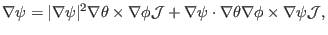
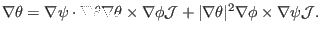
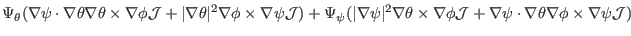
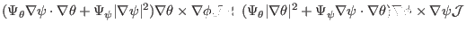
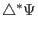
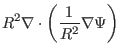
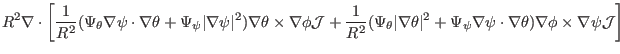
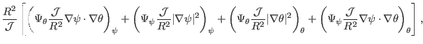

Next: Finite difference form of Up: Notes on tokamak equilibrium Previous: Large aspect ratio expansion
The fixed boundary equilibrium problem (also called the ``inverse equilibrium problem'' by some authors) refers to the case where the shape of a magnetic surface is given and one is asked to solve the equilibrium within this magnetic surface. To make it convenient to deal with the shape of the boundary, one usually use a general coordinates system which has one coordinate surface coinciding with the given magnetic surface. This makes it trivial to deal with the irregular boundary. To obtain the equilibrium, one needs to solve the GS equation in the general coordinate system. Next we derive the form of the GS equation in a general coordinate system. The main task is to derive the form of the toroidal elliptic operator in the general coordinate system. The toroidal elliptic operator takes the form
|  | (417) |
|  | (418) |
|  | |||
|  | (419) |
|  |  | ||
|  | |||
![$\displaystyle \frac{R^2}{\mathcal{J}} \left[ \frac{\partial}{\partial \psi} \le...
... \theta \vert^2 +
\Psi_{\psi} \nabla \psi \cdot \nabla \theta) \right) \right],$](img1285.png) |
(420) | ||
|  |
Using Eq. (415), the GS equation [Eq. (53)] is written